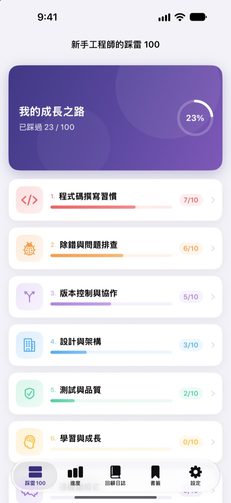
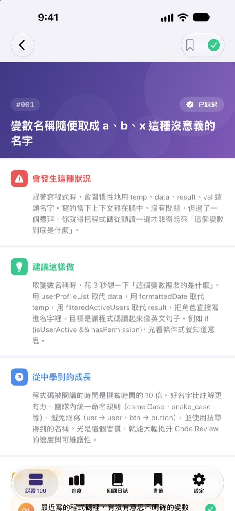
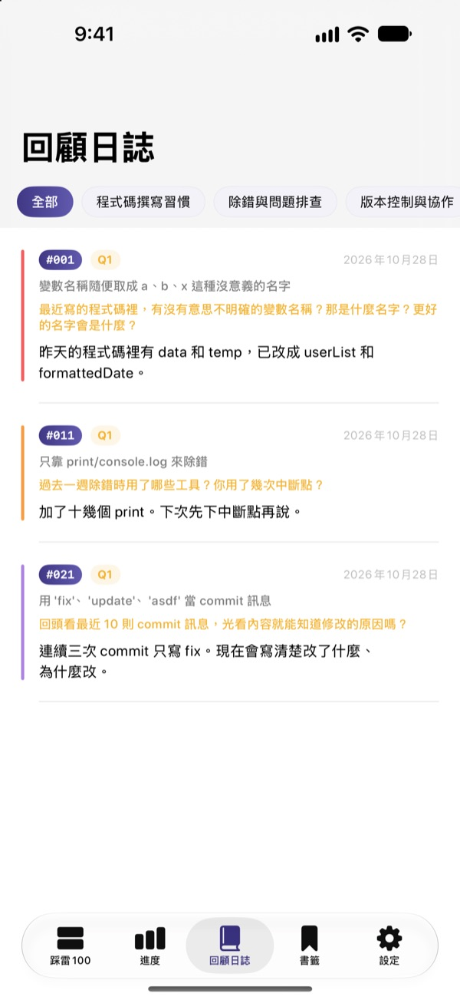
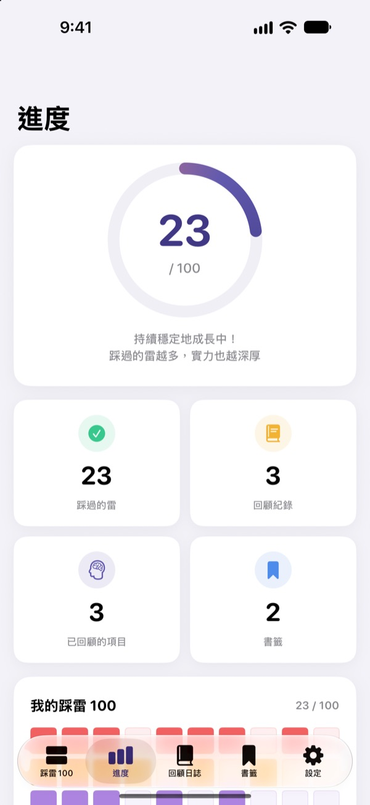

別等踩到雷
才知道痛
我們整理了新手工程師最常踩的 100 個雷。每個雷都說清楚會發生什麼、該怎麼做、能學到什麼，再回答一個回顧問題，同樣的錯就不會犯第二次。
前 30 個雷免費。支援 iPhone、iPad 和 Mac。

打開一個雷看看
這是免費開放的第一個分類裡的 10 個雷，內容和 App 裡完全一樣。踩過的就按「已踩過」打勾吧。
Code Review 又被指出一樣的問題？
看不懂的變數名稱、幾百行的函式、到處複製貼上。前輩們都踩過這些雷，但你往往要親自跌一跤才懂。踩雷100 先把這些雷擺在你面前，再讓你對照自己的經驗回顧，幫你不再重複同樣的錯。
每個雷：情境、做法、收穫
打開一個雷，會分成三部分說明：會發生什麼狀況、應該怎麼做、能從中學到什麼。
從程式碼撰寫習慣到資安、效能，共 10 個分類，只挑實際工作中一再發生的雷。

不只讀完，還要回顧
每個雷都有 4 個回顧問題，一共 400 個。想著自己的專案寫下回答，讀到的知識就會變成自己的經驗。
寫下的回答會依分類收進回顧日誌，隨時都能回頭看。

成長多少，一眼就看到
把踩過的雷打勾，分類進度和整體進度就會慢慢累積。想再看的雷可以加入書籤。
紀錄會透過 iCloud 在 iPhone、iPad 和 Mac 之間同步。

三個步驟就能開始
- 1
選一個分類
程式碼撰寫習慣、除錯與問題排查、版本控制與協作可以免費直接看。
- 2
讀完打勾
踩過的雷，按「已踩過」記下來。
- 3
回答回顧問題
想想自己的經驗，就算只寫一句也好。回答會收進回顧日誌。
涵蓋的 10 個分類
- 程式碼撰寫習慣
- #001–#010 · 免費
- 除錯與問題排查
- #011–#020 · 免費
- 版本控制與協作
- #021–#030 · 免費
- 設計與架構
- #031–#040 · PRO
- 測試與品質
- #041–#050 · PRO
- 學習與成長
- #051–#060 · PRO
- 溝通與協作
- #061–#070 · PRO
- 部署與維運
- #071–#080 · PRO
- 資安與資料
- #081–#090 · PRO
- 效能與最佳化
- #091–#100 · PRO
每個分類 10 個雷，每個雷 4 個回顧問題。
30 個免費，全部 100 個用 PRO
免費
- 前 3 個分類，30 個雷
- 對應的 120 個回顧問題
- 打勾、回顧日誌、進度、書籤
- iCloud 同步（iPhone、iPad、Mac）
踩雷100 PRO
- 其餘 7 個分類，再多 70 個雷（#031–#100）
- 新增 280 個回顧問題
- 之後所有的內容更新
可選擇月訂閱、年訂閱（比月訂閱最多省 50%），或一次付清的終身方案。
不蒐集個人資料，沒有分析工具，也沒有廣告。
常見問題
免費可以看到哪些？
程式碼撰寫習慣、除錯與問題排查、版本控制與協作這 3 個分類的 30 個雷和回顧問題都能用。打勾、回顧日誌、進度、書籤和 iCloud 同步也都免費。
買了 PRO，要怎麼在其他裝置使用？
用同一個 Apple ID 登入，再到購買畫面按「還原購買」。
要怎麼取消訂閱？
隨時可以在「設定」App 的 Apple ID › 訂閱項目中管理或取消。若沒有在目前週期結束前 24 小時取消，訂閱會自動續訂。終身方案只付一次。
裝置之間的紀錄沒有同步。
請確認所有裝置都用同一個 Apple ID 登入 iCloud，並在設定中為這個 App 開啟 iCloud。同步也需要網路連線。
想清除所有紀錄。
在 App 的設定中按「重設所有資料」，打勾、回顧紀錄和書籤都會被刪除，而且無法復原。
可以在哪些裝置上使用？
iPhone、iPad 和 Mac 都可以。買過的 PRO 在同一個 Apple ID 的所有裝置上都能使用。
我的紀錄會被傳到別的地方嗎？
不會。打勾和回顧回答只會存在你的裝置和你自己的 iCloud。不蒐集個人資料，沒有分析工具，也沒有廣告。
有問題或建議，歡迎寫信到 leeo@kakao.com。